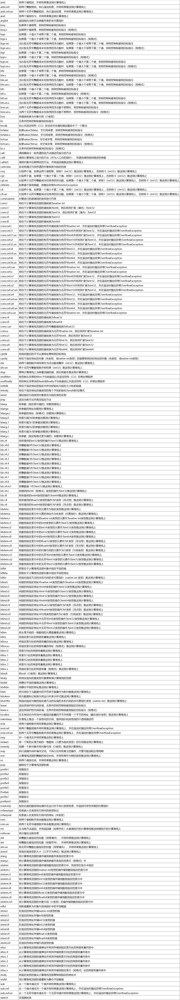

使用编译器可以将C#代码编译为中间语言（Intermediate Language，IL）代码，中间语言是一种平台无关的指令集，最终会由CLR将中间语言字节码转换为对应平台的机器码从而执行；阅读IL代码通常可以让我们更好的了解C#的底层实现方式；
※中间语言又称为通用中间语言（Common Intermediate Language，CIL）或微软中间语言（Microsoft Intermediate Language，MSIL）；
常用指令及其作用：

如果您觉得阅读本文对您有帮助，请点一下“推荐”按钮，您的认可是我写作的最大动力！
作者：Minotauros
出处：https://www.cnblogs.com/minotauros/
本文版权归作者和博客园共有，欢迎转载，但未经作者同意必须保留此段声明，且在文章页面明显位置给出原文连接，否则保留追究法律责任的权利。